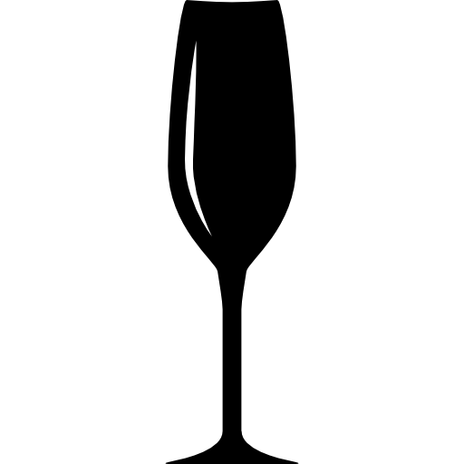
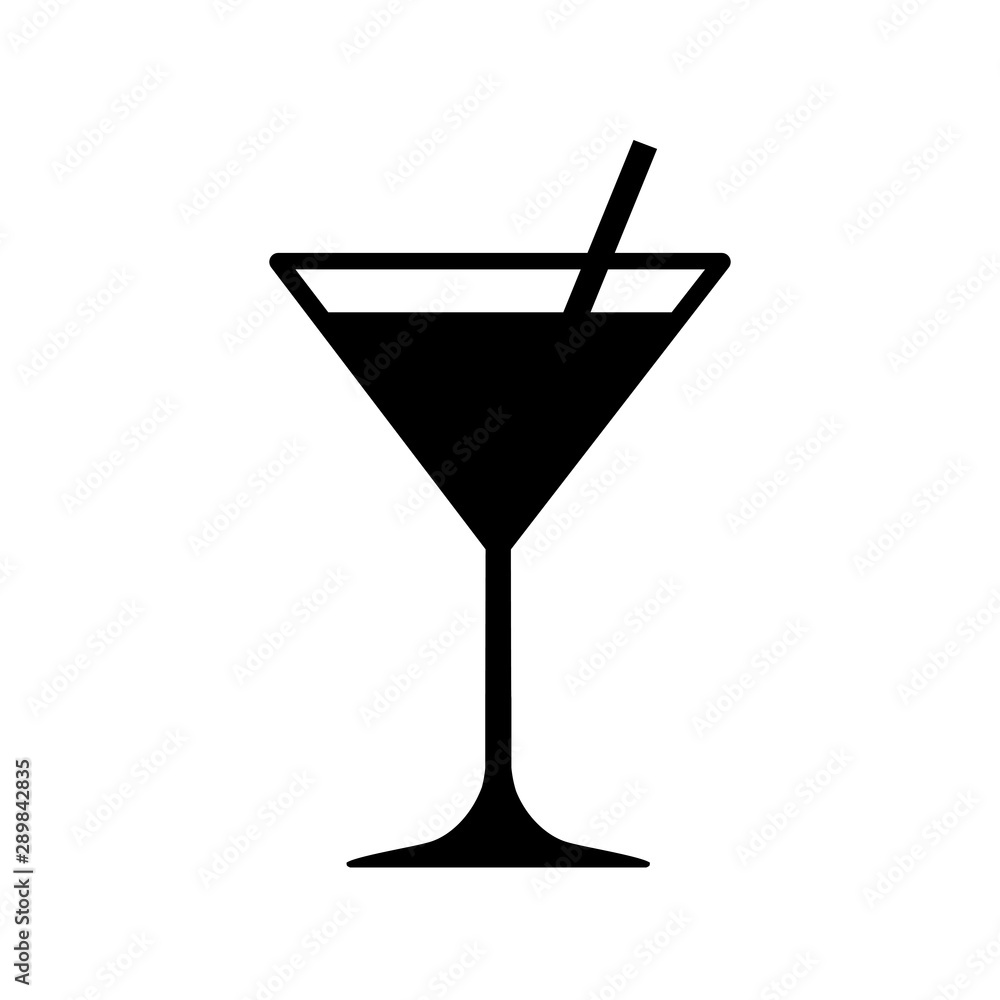
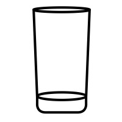
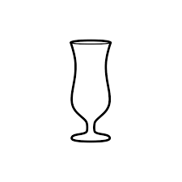

Miksujemy w shakerze, najpierw bez lodu i drugi raz z lodem.
Budujemy w szkle i delikatnie mieszamy.
Dekoracja: plaster pomarañczy

Budujemy w szkle i delikatnie mieszamy.
Dekoracja: plasterek pomarañczy

W shakerze.
Wlewamy delikatnie i tworzymy warstwy.
Na dnie mieszamy puree z niewielk¹ iloœci¹ prosecco, dope³niamy sch³odzonym winem. Inne pulpy owocowe jako warianty.
Mieszamy w szklanicy.
Dekoracja: zest z pomarañczy
W shakerze.
Ugniatamy limonkê z cukrem, dodajemy kruszony lód i cachacê. Mieszamy, zastêpujemy kruszonym lodem. Caipiroska to wariant zamienny z wódk¹.
Dry shake. Opcjonalnie grenadyna zamiast syropu malinowego i 20ml wytrawnego wermutu.
W shakerze
Dekoracja: limonka lub podpalona skórka pomarañczy

Rum do szklanki, dodajemy sok lub wyciskamy pó³ limonki i dope³niamy col¹.
W shakerze.
Wyciskamy limonkê do szklanki i dope³niamy piwem, na koñcu rum w formie warstwy.
W shakerze.
Miksujemy w shakerze, przecedzamy do kieliszka i dope³niamy szampanem.
Wszystko w shakerze.
Budujemy w szkle i delikatnie mieszamy.
W shakerze.
Inaczej Papa Doble. Wszystko w shakerze, mo¿na dos³adzaæ.
Budujemy w szkle i delikatnie mieszamy. Opcjonalnie likier zamiast syropu.
Mieszamy w szklance, uzupe³niamy piwem.
Rolowanie/throwning. Alternatywnie 3 dashe tabasco.
Dekoracja: seler naciowy
Najpierw Baileys, póŸniej blue curacao, aby utworzy³a siê warstwa. Na kieliszku k³adziemy otwieracz barowy bez gumowej okleini. Na otwieraczu ustawiamy wie¿ê z kieliszków. W metalowym dzbanku podpalamy Sambucê z likierem Kahlua i przelewamy na wie¿ê.
Miksujemy w shakerze wszystko oprócz coli, przecedzamy do szklanki i dodajemy odrobinê coli. Alt - najpierw wlewamy colê (1/3 szklanki,) a nastêpnie po kostkach lodu zawartoœæ shakera.
Miksujemy w shakerze z kruszonym lodem i przelewamy razem z lodem, bez sitka
Dopuszczalny te¿ burbon. Mieszamy w szklanicy barmañskiej i przecedzamy do kieliszka.
Dekoracja: wisienka koktajlowa
W shakerze.
Dekoracja: crust z cytryny i soli wokó³ brzegu kieliszka
Mieszamy w szklanicy.
Dekoracja: skórka z pomarañczy
Mieszamy w szklanicy lub w shakerze.
Dekoracja: oliwka lub skórka cytryny
Archers do kieliszka, delikatnie Baileys, aby powsta³y warstwy. Na koniec na œrodek grenadynê.
W shakerze.
Opcjonalnie odrobina triple sec.
Miêtê z syropem delikatnie ucieramy na dnie kubka lub szklanki. Dodajemy pozosta³e sk³adniki, lód kruszony i mieszamy. Dope³niamy kruszonk¹ i dekorujemy szczytami miêty.
Dekoracja: miêta
Ugniatamy limonkê z cukrem, dodajemy miêtê, kruszony lód i rum. Mieszamy, dope³niamy kruszonym lodem i wod¹ gazowan¹.
Wlewamy wódkê do szklanki, wyciskamy limonkê i dope³niamy piwem imbirowym. Tradycyjnie w miedzianym kubku.
Wlewamy delikatni w podanej kolejnoœci, aby stworzyæ warstwy. Rurk¹ dodaæ kropelki mleczka, które osiada pomiêdzy warstwami. Zwany te¿ Chmurka.
Budujemy w szkle i delikatnie mieszamy.
Dekoracja: plasterek pomarañczy
Archers do kieliszka, delikatnie Baileys, aby powsta³y warstwy. Na koniec na œrodek grenadynê.
Dopuszczalny te¿ burbon. Mieszamy w szklanicy barmañskiej.
Dekoracja: skórka pomarañczy
W shakerze, opcjonalnie czwarta czêœæ amaretto.
Miksujemy w shakerze, przecedzamy do szk³a, dope³niamy wod¹ i delikatnie mieszamy. Wodê mo¿na wlaæ te¿ do szklanki najpierw.
ucieramy w shakerze imbir z syropem miodowym, dodajemy resztê i miksujemy

Wersja autorska!
W shakerze, podajemy z kieliszkiem sch³odzonego wina musuj¹cego. Ile ml pulpy??
Na dno kubka od shakera bostoñskiego wlewamy grenadynê. Wsypujemy kruszony lód (po³owa objêtoœci shakera.) Wlewamy sok, a nastêpnie wódkê. Uzupe³niamy kruszonym lodem. Z jednej strony wlewamy blue curacao i szybko zaczynamy nalewaæ do kieliszków. Nalewamy jednym ruchem, nie przerywaj¹c strumienia miêdzy kieliszkami.
Reverse dry shake. Koktajl w szklance typu collins bez lodu.
Wlewamy po kolei, aby utworzy³y siê warstwy.
Alternatywnie bourbon. Do niskiej szklanki wsypujemy lód. W szklanicy mieszamy sk³adniki oprócz absyntu. Wyrzucamy lód ze szklanki, wlewamy do niej absynt i ruszamy szklank¹ tak, aby odrobina absyntu osiad³a na jej brzegach. Wylewamy absynt i przecedzamy ze szklanicy uprzednio zmieszane sk³adniki.
Dekoracja: skórka z cytryny dla aromatu
W shakerze miksujemy wódkê, likier brzoskwiniowy i sok pomarañczowy, przecedzamy do wysokiej szklanki i po koœciach lodu dope³niamy sokiem ¿urawinowym.
Wlewamy do szklanki Malibu i likier brzoskwiniowy, wype³niamy lodem, zlewamy po nim sok pomarañczowy ¿eby nie zmiesza³ siê z likierami. Na koniec wódka ¿urawinowa po ³y¿ce.
Wszystko w shakerze.
Dekoracja: Crust z cukru i cytryny.
W shakerze.
Wszystko w shakerze. Ca³e owoce muddlujemy w shakerze i dos³adzamy trochê syropem cukrowym. S³odkoœæ przecieru te¿ korygowaæ syropem. Mo¿na u¿ywaæ innych owoców do wariantów. Wariant w blenderze z lodem to Frozen Strawberry Margarita.
Dekoracja: Crusta z cukru
Wlewamy sok i tequilê do szklanki, na wierzch wlewamy grenadynê, tak aby opadaj¹c stworzy³a przejœcie kolorów.
Miksujemy w shakerze i dope³niamy wod¹ gazowan¹.
W shakerze.
W shakerze. Jeœli u¿ywamy bia³ka, najpierw sk³adniki miksujemy bez lodu (dry shake), a za drugim razem dopiero z lodem.
Dekoracja: skórka z pomarañczy
Budujemy w szkle i mieszamy lub w shakerze z lodem ubijamy mleczko/œmietankê. Na lód szklanki wlewamy likier, wódkê i na kostki ubite mleczko. Black Russian to wariant bez mleczka.